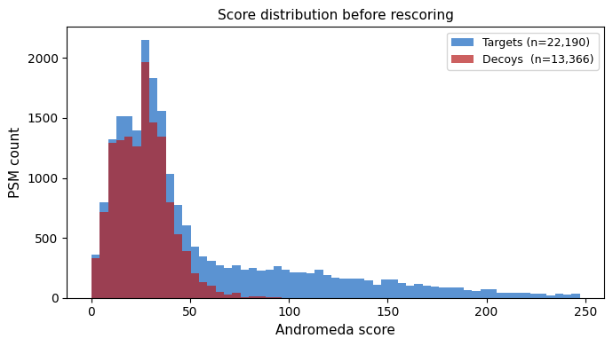
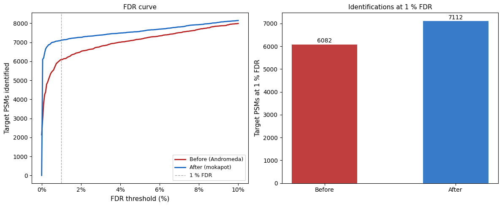
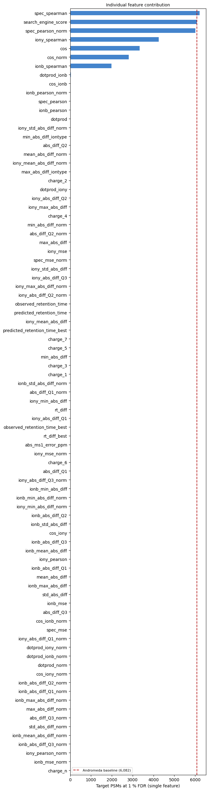

# Install dependencies (run once)
# !pip install ms2rescore psm-utils matplotlib tensorflow-cpuPSM Rescoring with MS²Rescore
Tool version: ms2rescore — latest PyPI release (see install cell) Estimated time: 30 min Level: intermediate Last tested: 2026-06-11
Abstract
Database search engines (MaxQuant, Sage, MSFragger, …) score peptide-spectrum matches (PSMs) using mass accuracy and the number of matched fragment ions, but leave substantial information on the table. MS²Rescore recovers that information by adding features derived from machine learning predictors and then re-ranking PSMs with a semi-supervised classifier. By the end of this tutorial, you will have rescored a real HeLa dataset and produced an FDR curve comparing identifications before and after rescoring.
In this tutorial we rescore a real HeLa LC-MS/MS dataset (MaxQuant search) using three complementary feature generators:
| Feature generator | Features added | Requires |
|---|---|---|
basic |
Charge, m/z error, missed cleavages, peptide length, … | PSM file only |
ms2pip |
Cosine similarity, spectral contrast, Pearson r between predicted and observed b/y-ions | PSM file + spectra |
deeplc |
Absolute and relative RT prediction error | PSM file only |
Features are combined by mokapot (a semi-supervised SVM re-implementation of Percolator) to produce new PSM scores and FDR estimates.
Learning objectives
By the end of this tutorial, you will be able to:
- Configure MS²Rescore’s PSM file, spectrum file, and feature generator settings
- Run the full MS²Rescore pipeline (feature generation + mokapot rescoring)
- Compare target-decoy score distributions and FDR curves before and after rescoring
- Break down the contribution of individual rescoring features
Prerequisites
- Familiarity with basic Python and pandas
- Understanding of target-decoy FDR estimation and PSM scoring
- Familiarity with the peptide property prediction tutorial (MS2PIP, DeepLC) is helpful but not required
Input data
A 7-minute HeLa gradient run searched with MaxQuant against a human proteome FASTA. The PSM file (msms.txt, ~20 MB) is from the psm_utils example data and the corresponding MGF spectra file (~91 MB) is from Zenodo record 18621806. Both files are downloaded automatically and cached in data/ in Section 2.
1. Setup
import os
os.environ["TF_CPP_MIN_LOG_LEVEL"] = "3"
import gzip
import io
import logging
import warnings
from pathlib import Path
import matplotlib.pyplot as plt
import matplotlib.ticker as ticker
import numpy as np
import pandas as pd
import requests
from psm_utils.io import read_file
from ms2rescore import rescore
from ms2rescore.config_parser import parse_configurations
logging.basicConfig(level=logging.WARNING)
logging.getLogger("deeplc").setLevel(logging.ERROR)
logging.getLogger("tensorflow").setLevel(logging.ERROR)
logging.getLogger("ms2rescore").setLevel(logging.ERROR)
warnings.filterwarnings("ignore")WARNING: All log messages before absl::InitializeLog() is called are written to STDERR
I0000 00:00:1781190563.609225 117741 port.cc:153] oneDNN custom operations are on. You may see slightly different numerical results due to floating-point round-off errors from different computation orders. To turn them off, set the environment variable `TF_ENABLE_ONEDNN_OPTS=0`.
WARNING: All log messages before absl::InitializeLog() is called are written to STDERR
I0000 00:00:1781190564.400742 117741 port.cc:153] oneDNN custom operations are on. You may see slightly different numerical results due to floating-point round-off errors from different computation orders. To turn them off, set the environment variable `TF_ENABLE_ONEDNN_OPTS=0`.%matplotlib inline2. Dataset
The search was performed with MaxQuant on a 7-minute HeLa gradient run acquired on an Orbitrap instrument (HCD fragmentation). The msms.txt file contains one row per PSM with the Andromeda score, peptide sequence (in MaxQuant modified-sequence notation), charge, retention time, and a target/decoy label (Reverse column).
| File | Source | Size |
|---|---|---|
msms.txt |
psm_utils example data (GitHub) | ~20 MB |
*.mgf |
Zenodo 18621806 | ~91 MB |
Note: downloading the spectra file (~91 MB) may take a minute or two depending on your connection speed. The files are cached in
data/after the first download.
data_dir = Path("data")
data_dir.mkdir(exist_ok=True)
MSMS_URL = (
"https://raw.githubusercontent.com/compomics/psm_utils/main"
"/example_files/msms.txt.gz"
)
MGF_URL = (
"https://zenodo.org/api/records/18621806/files"
"/20161213_NGHF_DBJ_SA_Exp3A_HeLa_1ug_7min_15000_02.mgf/content"
)
msms_path = data_dir / "msms.txt"
mgf_path = data_dir / "20161213_NGHF_DBJ_SA_Exp3A_HeLa_1ug_7min_15000_02.mgf"
if not msms_path.exists():
print("Downloading msms.txt (~20 MB)...")
r = requests.get(MSMS_URL, timeout=120)
with gzip.open(io.BytesIO(r.content)) as f:
msms_path.write_bytes(f.read())
print(f"Saved: {msms_path} ({msms_path.stat().st_size / 1e6:.1f} MB)")
else:
print(f"Using cached: {msms_path}")
if not mgf_path.exists():
print("Downloading spectra (~91 MB)...")
r = requests.get(MGF_URL, timeout=300, stream=True)
total = int(r.headers.get("content-length", 0))
downloaded = 0
with open(mgf_path, "wb") as f:
for chunk in r.iter_content(chunk_size=1 << 20):
f.write(chunk)
downloaded += len(chunk)
if total:
print(f" {downloaded / 1e6:.0f} / {total / 1e6:.0f} MB", end="\r")
print(f"\nSaved: {mgf_path} ({mgf_path.stat().st_size / 1e6:.1f} MB)")
else:
print(f"Using cached: {mgf_path}")Using cached: data/msms.txt
Using cached: data/20161213_NGHF_DBJ_SA_Exp3A_HeLa_1ug_7min_15000_02.mgf3. Inspecting the Search Results
Before rescoring, we load the msms.txt with psm_utils and examine the Andromeda score distribution. Good PSM scoring relies on clear separation between:
- Target PSMs (sequences from the correct proteome FASTA)
- Decoy PSMs (reversed sequences, used to estimate FDR)
The overlap between the two distributions determines how many PSMs can be identified at a given FDR threshold. MS²Rescore aims to push the two distributions further apart by adding orthogonal features.
psm_list = read_file(str(msms_path), filetype="msms")
psm_list.calculate_qvalues(lower_score_is_better=False)
df_before = psm_list.to_dataframe()
print(f"Total PSMs: {len(df_before):,}")
print(f" Targets: {(~df_before['is_decoy']).sum():,}")
print(f" Decoys: {df_before['is_decoy'].sum():,}")
targets_1pct_before = (~df_before['is_decoy'] & (df_before['qvalue'] <= 0.01)).sum()
print(f"\nTargets at 1 % FDR (Andromeda score): {targets_1pct_before:,}")Total PSMs: 35,556
Targets: 22,190
Decoys: 13,366
Targets at 1 % FDR (Andromeda score): 5,480fig, ax = plt.subplots(figsize=(7, 4))
targets = df_before[~df_before['is_decoy']]['score']
decoys = df_before[ df_before['is_decoy']]['score']
bins = np.linspace(0, df_before['score'].quantile(0.99), 60)
ax.hist(targets, bins=bins, alpha=0.7, color='#1565C0', label=f'Targets (n={len(targets):,})')
ax.hist(decoys, bins=bins, alpha=0.7, color='#B71C1C', label=f'Decoys (n={len(decoys):,})')
ax.set_xlabel('Andromeda score', fontsize=11)
ax.set_ylabel('PSM count', fontsize=11)
ax.set_title('Score distribution before rescoring', fontsize=11)
ax.legend(fontsize=9)
plt.tight_layout()
plt.show()
4. Running MS²Rescore
Configuration
MS²Rescore is configured through a nested dictionary that mirrors its JSON/TOML config file format. Key parameters:
psm_file/psm_file_type: path to the MaxQuantmsms.txtand its format.spectrum_path: path to the MGF file. Required by thems2pipfeature generator to match observed spectra with predictions.spectrum_id_pattern: a regex with one capture group that extracts the spectrum identifier from the MGF TITLE line. Here the title ends withscan=4703, so.*scan=(\d+)$extracts4703, which matches the MaxQuantScan numbercolumn.modification_mapping: maps MaxQuant short modification codes (ac,ox,de,gl) to the PSI-MOD names expected by MS2PIP and DeepLC.fixed_modifications: modifications that are fixed for all peptides (carbamidomethylation of Cys is standard in this experiment).feature_generators: which feature sets to compute. Disablingms2pipwould skip the spectrum matching step and produce faster but less powerful rescoring.rescoring_engine:mokapot(semi-supervised SVM, in-process) orpercolator(if installed separately as a binary).
output_dir = data_dir / "output"
output_dir.mkdir(exist_ok=True)
config = parse_configurations(
{
"ms2rescore": {
"psm_file": str(msms_path),
"psm_file_type": "msms",
"spectrum_path": str(mgf_path),
"output_path": str(output_dir / "ms2rescore"),
"spectrum_id_pattern": r".*scan=(\d+)$",
"modification_mapping": {
"gl": "Gln->pyro-Glu",
"ox": "Oxidation",
"ac": "Acetylation",
"de": "Deamidation",
},
"fixed_modifications": {"Carbamidomethyl": ["C"]},
"feature_generators": {
"basic": {},
"ms2pip": {"model": "HCD2021", "ms2_tolerance": 0.02},
"deeplc": {"calibration_set_size": 0.15},
},
"rescoring_engine": {"mokapot": {"train_fdr": 0.05}},
"log_level": "warning",
"write_report": False,
}
}
)
print("Running MS\u00b2Rescore...")
print("(feature generation + mokapot training typically takes 10\u201315 minutes)")
rescore(config)
print("Done.")Running MS²Rescore...
(feature generation + mokapot training typically takes 10–15 minutes)Done.5. Results
The output file ms2rescore.psms.tsv contains one row per PSM with:
score: the mokapot discriminant score (higher = more likely correct)qvalue: the PSM-level FDR estimate from mokapotpep: posterior error probabilityprovenance:before_rescoring_score: the original Andromeda scorerescoring:*: all features that were passed to mokapot
We compare target PSMs identified at 1 % FDR before and after rescoring, and plot the FDR curves to show the improvement across all FDR thresholds.
output_tsv = output_dir / "ms2rescore.psms.tsv"
df_after = pd.read_csv(output_tsv, sep=" ")
# Before: compute q-values from the Andromeda score stored in provenance column
def compute_qvalues(df, score_col, descending=True):
"""Target-decoy q-value computation (BH-monotone)."""
df = df.sort_values(score_col, ascending=not descending).copy()
cum_decoy = df['is_decoy'].cumsum()
cum_target = (~df['is_decoy']).cumsum().clip(lower=1)
raw_fdr = (cum_decoy / cum_target).clip(upper=1.0).values
df['_qval'] = np.minimum.accumulate(raw_fdr[::-1])[::-1]
return df
df_before_scored = compute_qvalues(
df_after, 'provenance:before_rescoring_score', descending=True
)
n_before = (~df_before_scored['is_decoy'] & (df_before_scored['_qval'] <= 0.01)).sum()
n_after = (~df_after['is_decoy'] & (df_after['qvalue'] <= 0.01)).sum()
print(f"Targets at 1 % FDR")
print(f" Before rescoring (Andromeda): {n_before:,}")
print(f" After rescoring (mokapot): {n_after:,}")
print(f" Gain: +{n_after - n_before:,} (+{100*(n_after - n_before)/n_before:.1f} %)")Targets at 1 % FDR
Before rescoring (Andromeda): 6,082
After rescoring (mokapot): 7,112
Gain: +1,030 (+16.9 %)fig, axes = plt.subplots(1, 2, figsize=(12, 5))
# --- Left: FDR curves ---
ax = axes[0]
fdr_thresholds = np.linspace(0, 0.1, 200)
for label, df_scored, score_col, qval_col, color in [
('Before (Andromeda)', df_before_scored, 'provenance:before_rescoring_score', '_qval', '#B71C1C'),
('After (mokapot)', df_after, 'score', 'qvalue', '#1565C0'),
]:
tgt = df_scored[~df_scored['is_decoy']]
counts = [(tgt[qval_col] <= t).sum() for t in fdr_thresholds]
ax.plot(fdr_thresholds * 100, counts, label=label, color=color, linewidth=2)
ax.axvline(1, color='gray', linestyle='--', linewidth=1, alpha=0.7, label='1 % FDR')
ax.set_xlabel('FDR threshold (%)', fontsize=11)
ax.set_ylabel('Target PSMs identified', fontsize=11)
ax.set_title('FDR curve', fontsize=11)
ax.legend(fontsize=9)
ax.xaxis.set_major_formatter(ticker.FuncFormatter(lambda x, _: f'{x:.0f}%'))
# --- Right: bar chart ---
ax2 = axes[1]
ax2.bar(['Before', 'After'], [n_before, n_after],
color=['#B71C1C', '#1565C0'], alpha=0.85, width=0.5)
ax2.set_ylabel('Target PSMs at 1 % FDR', fontsize=11)
ax2.set_title('Identifications at 1 % FDR', fontsize=11)
for i, v in enumerate([n_before, n_after]):
ax2.text(i, v + 20, str(v), ha='center', va='bottom', fontsize=10)
plt.tight_layout()
plt.show()
# Feature contribution: compare individual feature q-values at 1% FDR
rescoring_cols = [c for c in df_after.columns if c.startswith('rescoring:')]
feature_gains = {}
for col in rescoring_cols:
df_feat = compute_qvalues(df_after.dropna(subset=[col]), col, descending=True)
n_feat = (~df_feat['is_decoy'] & (df_feat['_qval'] <= 0.01)).sum()
feature_gains[col.replace('rescoring:', '')] = n_feat
feat_df = pd.Series(feature_gains).sort_values(ascending=True)
fig, ax = plt.subplots(figsize=(7, max(4, len(feat_df) * 0.3)))
feat_df.plot.barh(ax=ax, color='#1565C0', alpha=0.8)
ax.axvline(n_before, color='#B71C1C', linestyle='--', linewidth=1.5,
label=f'Andromeda baseline ({n_before:,})')
ax.set_xlabel('Target PSMs at 1 % FDR (single feature)', fontsize=10)
ax.set_title('Individual feature contribution', fontsize=10)
ax.legend(fontsize=8)
plt.tight_layout()
plt.show()
Key points
- Database search engines leave orthogonal information unused; MS²Rescore recovers it through additional feature generators layered on top of the original search results.
basicfeatures come from the search result itself;ms2pipanddeeplcfeatures come from comparing predicted peptide properties to the observed spectrum and RT.- All features are combined by mokapot, a semi-supervised SVM that learns a linear combination of features to maximally separate targets from decoys.
- On this 7-minute HeLa run, rescoring increased identifications at 1 % FDR by ~17 % compared to the original Andromeda score.
Next steps
- Peptide property prediction tutorial: learn how the MS2PIP and DeepLC predictions used as rescoring features are generated.
- MS²Rescore documentation
- Try adding the
ionmoborim2deepfeature generators if your data includes ion mobility (CCS) values.
References
- Declercq et al., Journal of Proteome Research (2023). MS²Rescore. doi:10.1021/acs.jproteome.3c00785
- mokapot — the rescoring engine used here.